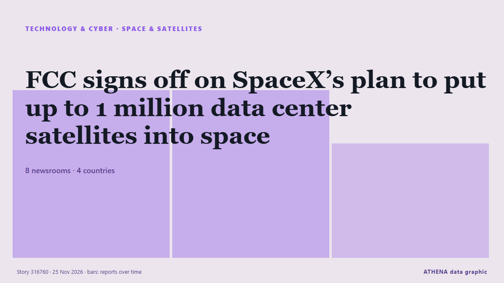

Διάστημα & δορυφόροι
ΧορηγούμενοΠαρουσιάζεται από  Cybernetics and Artificial Intelligence Lab Welcome to the Cybernetics and Artificial Intelligence Laboratory, established at the Department of Business Administration of the National and Kapodistrian University of Athens. The lab is headed by Professor Dimitrios Thomakos. The lab aims to do research that can be published in top venues. Our research uses tools and methods of Artificial Intelligence, and lies in the following areas: - Forecasting - Decision making - Cyber security - Finance We are always looking forward to collaborating with exceptional students!
Cybernetics and Artificial Intelligence Lab Welcome to the Cybernetics and Artificial Intelligence Laboratory, established at the Department of Business Administration of the National and Kapodistrian University of Athens. The lab is headed by Professor Dimitrios Thomakos. The lab aims to do research that can be published in top venues. Our research uses tools and methods of Artificial Intelligence, and lies in the following areas: - Forecasting - Decision making - Cyber security - Finance We are always looking forward to collaborating with exceptional students!
| 13 Νοε | 0 |
|---|---|
| 14 Νοε | 0 |
| 15 Νοε | 0 |
| 16 Νοε | 0 |
| 17 Νοε | 0 |
| 18 Νοε | 0 |
| 19 Νοε | 1 |
| 20 Νοε | 1 |
| 21 Νοε | 2 |
| 22 Νοε | 0 |
| 23 Νοε | 6 |
| 24 Νοε | 2 |
| 25 Νοε | 4 |
| 26 Νοε | 0 |
Οι τίτλοι των ειδήσεων παρουσιάζονται στα αγγλικά, όπως δημοσιεύτηκαν.

FCC signs off on SpaceX’s plan to put up to 1 million data center satellites into space
In an announcement on Wednesday, the FCC says it authorized SpaceX to deploy up to 1 million AI chip-equipped satellites as part of the Elon Musk-owned company's "Starmind" initiative. από The Verge
NASA chief shreds Marjorie Taylor Greene after she denies Moon landing
Former MAGA congresswoman rebuked by space agency’s administrator after “irresponsible” warning of ‘Chernobyl event’ when Army detonates degraded lead azide in Iowa. από The Independent
China's Shenzhou-24 docks with Tiangong, welcomes Pakistani astronaut
China rocket blasts off on Shenzhou-24 mission: state media. από Gulf News
Nato vows space defence after Russia nuclear satellite report
German media has reported that Russia plans to launch a satellite dubbed “Sputnik-S”, reportedly equipped with a nuclear warhead, in the coming weeks. από The Straits Times
BepiColombo Reaches Mercury to Investigate Why the Planet is Shrinking
After eight years traveling through the solar system, the BepiColombo mission entered Mercury’s orbit on Nov. από Colombia One
8 years, 10 billion km: Japan-Europe spacecraft enters Mercury's orbit
The BepiColombo mission, a collaboration between Japan and Europe, has reached Mercury's orbit after an impressive journey exceeding 10 billion kilometers since its 2018 launch. από Times of India
Ford invests in Revolution Space to scale spacecraft production
Ford is investing in Revolution Space to help scale production of advanced spacecraft, bringing the automaker's manufacturing and supply-chain capabilities into a growing space market. από DigiTimes Asia
UK defence secretary wants to find out what happened with Starlink and Starshield in Ukraine
UK Defence Secretary Wes Streeting said Starlink and Starshield disruptions in Ukraine require a clear explanation, noting they have dented allies' trust. από Ukrainska Pravda (English)
Reports: Russia may launch nuclear weapon into orbit as soon as next month
A nuclear detonation in space "could cause rapid and sudden loss or degradation of thousands of satellites." από Ars Technica
European-Japanese spacecraft reaches Mercury after eight-year journey, suffers glitch
Mercury, only slightly larger than Earth's Moon, is the least explored of the four planets in the inner solar system, with BepiColombo only the third spacecraft to visit the planet. από The Jerusalem Post
Lithuania plans joint investigation with three EU countries into Starlink arson attacks
Lithuania, Poland, Germany, and Bulgaria are planning to set up a joint investigation team to investigate arson attacks targeting Starlink satellite communications infrastructure, Polish radio… από LRT English (alternative feed)